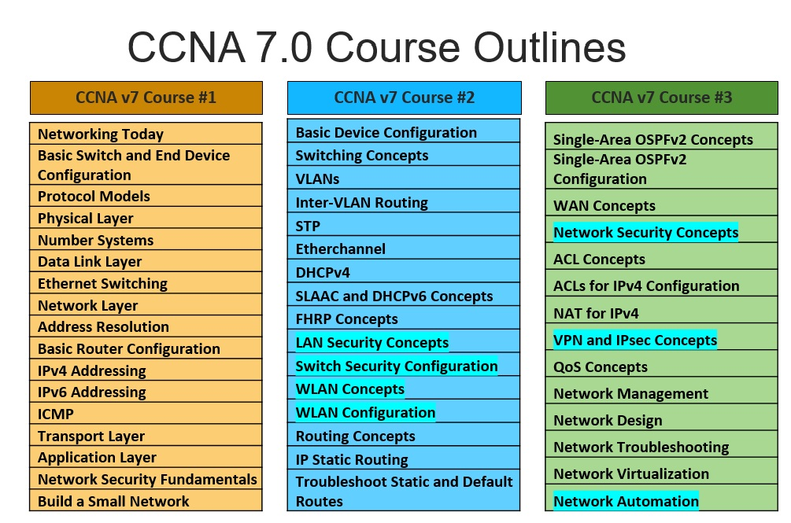
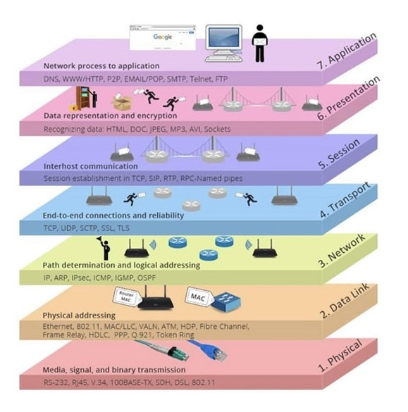

La certificación CCNA homologa los conocimientos y habilidades relacionados con los fundamentos de la red, el acceso a la red, la conectividad IP, los servicios IP, los fundamentos de seguridad y la automatización y la capacidad de programación.
El examen para la certificación es el Cisco Certified Network Associate v1.0. CCNA 200-301.
El programa oficial de CCNA actual presenta tres cursos, los cuales han sido divididos en modulos para un mejor enfoque de los temas tratados.
 Contenido curricular del CCNAv7.0.Actualmente la oferta es variada para la preparación en la certificación, teniendo desde academias hasta metodos de auto estudio. No existe un requisito previo para ello, lo unico es estar preparado en la conceptualización de temas y el desarrollo de las habilidades practicas que exije el programa.
Si quieres cambiar al mundo, cámbiate a ti mismo. "Mahatma".
Arquitectura de red
Las tecnologias que integran la infrestructura de red son la base principal sobre la cual se transfieren los datos, considerando un diseño convergente debe presentar 4 caracteristicas minimas como son: Tolerancia a fallas, Escalabilidad, Calidad de servicio (QoS) y Seguridad.
Arquitectura: Enlace de información.
Cisco IOS
Un router cisco ejecuta un proceso de arranque que dependiendo de la configuración de registro ejecutara el POST, Bootstrap y cargara el IOS desde la memoria FLASH. Es importante diferenciar las caracteristicas funcionales del sistema operativo para su configuración teniendo en cuenta que cisco presenta principalmente tres versiones:
Cisco IOS es un sistema operativo multitarea empleado en la mayoria de router y switch (Serie de Router Cisco 7200, 7600, 10000 y 12000; ISR 800, 1800, 1900, 2800, 2900, 3800 y 3900 & Switch Catalyst).
Cisco IOS XE con una estructura modular de alta disponibilidad, gestión similar a IOS anteriores e imagen universal (Serie de Router ASR 900 y 1000).
Cisco IOS XR se basa en un microkernel de alta disponibilidad y escalabilidad, facilidad y especial "upgrade", Protección de procesos y gestión web (Router Cisco NSC, CRS, XR 12000 & ASR 9000) .
IOS: Enlace de información.
Modelos de referencia
El modelo OSI sigue siendo la base para el analisis del proceso de encapsulamiento. Es asi que se facilita en entendimiento de todo el proceso interno para la preparación y envio de información mediante la red, diferenciandose la importancia de cada protocolo de acuerdo a la capa asi como los dispositivos de red.
 Resumen de la función y protocolos del modelo OSIEs importante relacionar la función de cada capa para comprender el trabajo de cada dispositivo de red, lo cual facilita un mejor diseño, optimización y la solución de fallos en la red .
Modelos de referencia: Enlace de información.
Ethernet
Es una de las tecnologias LAN que mas evoluciono en las ultimas decadas, principalmente por el uso del switch, los medios de fibra optica y el soporte de ancho de banda. Permitiendose su aplicación en entornos MAN y WAN .
Se estandarizo mediante la IEEE 802.3, presentado beneficios de escalabilidad, bajo costo, simplicidad, bajo retardo, direccionamiento flexible, entre otros. La tecnologia define la funcionalidad a nivel capa fisica y enlace de datos.
Ethernet presenta varias versiones que principalmente varian en el tipo de medio y su alcance (802.3i, 802.3u, 802.3z, 802.3ab, 802.3ae, 802.3ak, 802.3an, 802.3ap & 802.3aq.
Ethernet: Enlace de información.
ICMP
Internet Control Message Protocol establecido en la RFC 792, emite mensajes con detalles del error en la comunicación al dispositivo origen del paquete, mediante los primeros 8 bytes y 13 tipos de mensajes.
Las opciones de prueba como Ping y Tracert son principalmente empleadas sobre todo cuando se manejan las opciones extendidas para la verificación.
ICMP: Enlace de información.
Diseño de red
Un diseño de red implica una preparación y posterior planificación respecto a la infraestructura de red en cuanto a los objetivos y necesidades empresariales; dentro de la planificación se recomienda un diseño jerarquico por los beneficios de la arquitectura de capas incluso teniendo un modelo de nucleo contraido .
Diseño de red: Enlace de información.
Tabla de enrutamiento
La tabla de enrutamiento como mapa de rutas hacia redes conocidas es la guia que todo dispositivo de enrutamiento maneja, su informacion deriva de rutas conectadas directamente o de rutas remotas (Enrutamiento estatico o dinamico). Dentro se encuentran diferentes parametros que establecen el alcance hacia la red como el origen de ruta, metrica, distancia administrativa, ruta final, entre otros .
La estructura de toda tabla se basa en el direccionamiento con clase e integra rutas de nivel 1, rutas principales y rutas secundarias facilitandose el proceso de busqueda.
Las rutas de nivel 1 considera Redes, superredes y ruta por defecto.
Las rutas principales son las redes con clase que presentan subredes pero sin rutas finales.
Las rutas secundarias (entrada identada)considera a las subredes, de cualquier clase.
RoutingTable: Enlace de información.